Chapter 10 Strings
10.1 들어가기
이 장에서는 R에서의 문자열 조작(string manipulation)을 소개한다. 문자열이 동작하는 방식과 문자열을 직접 생성하는 법의 기초를 배우겠지만, 이 장의 초점은 정규표현식(regular expressions), 줄여서 regexps 이다. 문자열은 일반적으로 비정형 및 반정형 데이터를 포함하는데, 정규표현식은 문자열의 패턴을 간결하게 기술하는 언어라는 점에서 유용하다. 정규표현식을 처음 보면 고양이가 키보드를 밟고 간 것처럼 보이겠지만, 이해도가 높아질수록 의미가 눈에 들어올 것이다.
10.1.1 준비하기
이 장에서는 문자열 조작을 할 수 있는 stringr 패키지에 초점을 맞출 것이다. 보통은 항상 텍스트 데이터를 다루어야 하는 것은 아니기 때문에, stringr 은 핵심 tidyverse에 포함되어 있지 않다. 따라서 명시적으로 로드해야 한다.
library(tidyverse)
library(stringr)10.2 문자열 기초
작은따옴표나 큰따옴표로 문자열을 생성할 수 있다. 다른 언어와는 달리 두 동작에 차이가 없다. 여러 개의 " 를 포함하는 문자열을 생성하려는 것이 아니라면 항상 " 를 사용할 것을 추천한다.
string1 <- "문자열입니다"
string2 <- '문자열 내에 "인용문"이 포함된 경우, 나는 작은 따옴표를 사용한다'따옴표 닫는 것을 잊어 버린 경우, 연속문자(continuation character)인 + 가 나타난다.
> "닫는 따옴표가 없는 문자열이다
+
+
+ 도와줘요 갇혔어요이 같은 일이 발생했다면 이스케이프키를 누르고 다시 시도하라!
작은따옴표 문자나 큰따옴표 문자를 문자열에 포함하려면 ‘벗어나기 (escape)’ 위해 \ (이스케이프 키)를 사용할 수 있다.
double_quote <- "\"" # or '"'
double_quote## [1] "\""single_quote <- '\'' # or "'"
single_quote## [1] "'"같은 원리로 역슬래시 문자를 포함하려면 "\\" 과 같이 두 번 입력해야 한다.
문자열의 출력 표시는 문자열 자체와 같지 않다는 것에 주의하라. 출력에선 이스케이프가 보이기 때문이다. 문자열의 원시 형태를 보려면 writeLines() 를 사용하라.
x <- c("\"", "\\")
x## [1] "\"" "\\"writeLines(x)## "
## \이 외의 특수 문자들도 매우 많다. 줄바꿈, "\n" , 탭, "\t" 은 가장 일반적인 것들이다. ?'"' , 혹은 ?"'" 로 볼 수 있는 도움말을 통해 전체 목록을 볼 수 있다. 또한 "\u00b5" 과 같은 문자열을 간혹 볼 수도 있는데, 이는 비영어 문자를 모든 플랫폼에서 동작하도록 작성한 것이다.
x <- "\u00b5"
x## [1] "μ"복수의 문자열은 종종 c() 로 만들 수 있는 문자형 벡터에 저장된다.
c("one", "two", "three")## [1] "one" "two" "three"10.2.1 문자열 길이
베이스 R에는 문자열에 동작하는 함수가 많이 있지만 일관성이 없고, 또 따라서 기억해내기 어렵기 때문에 여기에서는 사용하지 않을 것이다. 대신 우리는 stringr 의 함수를 사용할 것이다. 이 함수들의 이름은 좀 더 직관적이며 모두 str_ 로 시작한다. 예를 들어 str_length() 는 문자열의 문자 개수를 알려준다.
str_length(c("a", "R for data science", NA))## [1] 1 18 NA공통된 str_ 접두사는 RStudio 이용자에게 특히 유용하다. str_ 을 타이핑하면 자동완성을 불러와서 모든 stringr 함수를 볼 수 있기 때문이다.

img
10.2.2 문자열 결합
문자열을 두 개 이상 결합하기 위해서는 str_c() 를 사용하라.
str_c("x", "y")## [1] "xy"str_c("x", "y", "z")## [1] "xyz"구분 방식을 컨트롤하기 위해 sep = 인수를 사용하라.
str_c("x", "y", sep = ", ")## [1] "x, y"#> [1] "x, y"대부분의 R 함수들에서 그렇듯 결측값은 설정된 것이 이후로 계속 파급된다(contagious). 결측값을 "NA" 로 출력되길 원하면 str_replace_na() 를 사용하라.
x <- c("abc", NA)
str_c("|-", x, "-|")## [1] "|-abc-|" NAstr_c("|-", str_replace_na(x), "-|")## [1] "|-abc-|" "|-NA-|"앞의 코드에서 본 것처럼 str_c() 는 벡터화되고 짧은 벡터가 긴 벡터와 길이가 같도록 자동으로 재사용한다.
str_c("prefix-", c("a", "b", "c"), "-suffix")## [1] "prefix-a-suffix" "prefix-b-suffix" "prefix-c-suffix"길이가 0인 객체는 조용히 삭제된다. 이 특성은 if 와 함께 쓰면 특히 유용하다.
name <- "Hadley"
time_of_day <- "morning"
birthday <- FALSE
str_c(
"Good ", time_of_day, " ", name,
if (birthday) " and HAPPY BIRTHDAY",
"."
)## [1] "Good morning Hadley."문자열 벡터를 하나의 문자열로 합치려면 collapse 를 사용하라.
str_c(c("x", "y", "z"), collapse = ", ")## [1] "x, y, z"10.2.3 문자열 서브셋하기
문자열의 일부는 str_sub() 를 사용하여 추출할 수 있다. 이 함수는 문자열과 더불어 부분문자열의 위치를 지정하는 start 와 end 인수를 취한다.
x <- c("Apple", "Banana", "Pear")
str_sub(x, 1, 3)## [1] "App" "Ban" "Pea"# 음수는 끝에서부터 반대 방향으로 센다
str_sub(x, -3, -1)## [1] "ple" "ana" "ear"str_sub() 는 문자열이 너무 짧은 경우에도 오류가 발생하지 않고 가능한 만큼 반환한다는 것을 주목하라.
str_sub("a", 1, 5)## [1] "a"str_sub() 의 할당 형식을 사용하여 문자열을 수정할 수도 있다.
str_sub(x, 1, 1) <- str_to_lower(str_sub(x, 1, 1))
x## [1] "apple" "banana" "pear"10.2.4 로케일
앞서 str_to_lower() 를 사용하여 텍스트를 소문자로 변경했다. str_to_upper() 또는 str_to_title() 을 사용할 수도 있다. 그러나 각각의 언어는 대소문자 규칙이 다르므로 대소문자 변경은 생각보다 더 복잡하다. 로케일을 지정하여, 어떤 규칙 집합을 사용할지 정할 수 있다.
# 터키어는 i가 점이 있는 것과 없는 것 두 개이다
# 또한 대문자도 다르다
str_to_upper(c("i", "ı"))## [1] "I" "I"str_to_upper(c("i", "ı"), locale = "tr")## [1] "<U+0130>" "I"로케일은 두 글자 또는 세 글자 줄임말인 ISO 639 언어 코드로 지정된다. 설정하고자 하는 언어의 ISO639 코드를 모르는 경우, 위키피디아에 잘 정리되어 있다. 로케일을 비워 둘 경우에는 운영체제에서 제공한 현재 로케일을 사용한다.
로케일의 영향을 받는 또 다른 중요한 작업은 정렬이다. 베이스R의 order() 및 sort() 함수는 현재 로케일을 사용하여 정렬한다. 다른 컴퓨터에서도 변함없는 동작을 원한다면 로케일 추가인수를 취하는 str_sort() 와 str_order() 를 사용하면 된다.
x <- c("apple", "eggplant", "banana")
str_sort(x, locale = "en") # English## [1] "apple" "banana" "eggplant"str_sort(x, locale = "haw") # Hawaiian## [1] "apple" "eggplant" "banana"10.2.5 연습문제
- stringr 을 사용하지 않는 코드에서
paste()와paste0()를 종종 볼 것이다. 두 함수의 차이점은 무엇인가? 이들에 상응하는 stringr 함수는 무엇인가? 이 함수들은NA를 다룰 때 어떻게 다른가? str_c()의sep인수와collapse인수의 차이를 자신의 말로 기술하라.str_length()과str_sub()을 이용하여 문자열 중앙 문자를 추출하라. 문자열에 짝수 개의 문자가 있다면 어떻게 하겠는가?str_wrap()의 기능은 무엇인가? 어떤 경우에 이 함수를 사용하겠는가?str_trim()의 기능은 무엇인가?str_trim()의 반대는 무엇인가?- 예를 들어 벡터
c( "a", "b", "c")를 문자열a, b, c로 변환하는 함수를 작성하라. 길이가 0, 1, 2인 벡터일 경우 어떻게 해야 하는지에 대해 신중하게 생각해보라.
10.3 정규표현식을 이용한 패턴 매칭
정규표현식은 문자열의 패턴을 기술하는 매우 간결한 언어이다. 이해하는 데 다소 시간이 걸리지만 한번 이해하면 매우 유용함을 알 수 있을 것이다.
정규표현식을 배우기 위해 우리는 str_view() 와 str_view_all() 를 사용할 것이다. 이 두 함수는 문자 벡터와 정규표현식을 취해, 이들이 어떻게 매칭되는지를 보여준다. 우리는 매우 단순한 정규표현식부터 시작해서 점진적으로 복잡한 형태를 볼 것이다. 패턴 매칭을 충분히 익힌 후에는 다양한 stringr 함수로 적용하는 법을 배울 것이다.
10.3.1 기본 매칭
가장 간단한 패턴은 문자열 전체 (exact) 매칭이다.
x <- c("apple", "banana", "pear")
str_view(x, "an")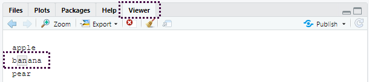
- R Studio의 Viewer 패널에 결과가 표시된다.
"an"패턴과 일치하는 문자열은"banana"
다음으로 간단한 단계는 (줄바꿈을 제외한) 임의의 문자와 매칭하는 . 이다.
str_view(x, ".a.")apple
그런데 "." 이 임의의 문자와 매칭된다면, 문자 "." 는 어떻게 매칭하겠는가? ’이스케이프’를 사용하여 우리가 특별 동작을 사용하려는 것이 아니라, 정확하게 매칭하고 싶다는 것을 정규표현식에 표현해야 한다.
정규표현식도 문자열과 마찬가지로 특별한 동작을 이스케이프하기 위해 역슬래시(\ )를 사용한다. 따라서 . 를 매칭하기 위해서는 정규표현식 \. 을 써야한다. 그런데 이렇게 하면 문제가 생긴다. 정규표현식을 나타내기 위해 문자열을 사용했고 \ 도 문자열에서 이스케이프 상징어로 사용하였다.
따라서 정규표현식 \. 를 작성하기 위해서는 문자열 "\\." 이 필요하다.
# To create the regular expression, we need \\
dot <- "\\."
# But the expression itself only contains one:
writeLines(dot)## \.# And this tells R to look for an explicit .
str_view(c("abc", "a.c", "bef"), "a\\.c")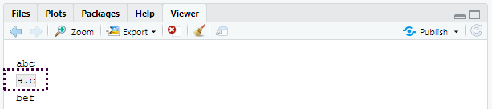
정규표현식에서 \ 를 이스케이프 문자로 사용한다면 문자 \ 는 도대체 어떻게 매칭하겠는가? 정규표현식 \\ 를 만들어 이스케이프해야 한다. 앞의 정규표현식을 만들려면 \ 를 이스케이프하는 문자열이 필요하다. 즉, 문자 \ 을 매칭하기 위해서 "\\\\" 라고 작성해야 한다. 즉, 하나를 매칭하기 위해 네 개의 역슬래시가 필요하다!
x <- "a\\b"
writeLines(x)## a\bstr_view(x, "\\\\")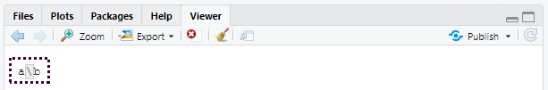
여기서 정규표현식은 \. 과 같이 쓰고 정규표현식을 나타내는 문자열은 "\\." 과 같이 쓸 것이다.
10.3.1.1 연습문제
- 다음의 각 문자열
"\", "\\", "\\\"이\과 매칭되지 않는 이유를 설명하라. - 시퀀스
"'\를 어떻게 매칭하겠는가? - 정규표현식
\..\..\..은 어떤 패턴과 매칭되겠는가? 문자열로 어떻게 표현하겠는가?
10.3.2 앵커
기본적으로 정규표현식은 문자열의 일부를 매치한다. 정규표현식을 앵커로 고정(anchor) 하여 문자열의 시작 또는 끝과 매칭하면 유용한 경우가 많다. 다음을 사용할 수 있다.
^: 문자열의 시작과 매칭$: 문자열의 끝과 매칭
x <- c("apple", "banana", "pear")
str_view(x, "^a")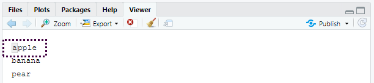
str_view(x, "a$")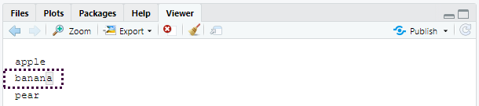
두 기호를 올바로 기억하기 위해, 에반 미슐라가 알려준 다음의 연상 구문을 시도해보자. 파워(^ )로 시작하면, 돈($ )으로 끝나게 된다.
정규표현식을 문자열 전체와 강제로 매칭하도록 하려면 ^ 와 $ 로 고정하라.
x <- c("apple pie", "apple", "apple cake")
str_view(x, "apple")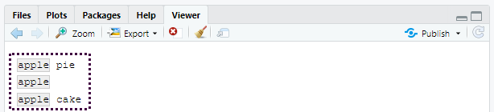
str_view(x, "^apple$")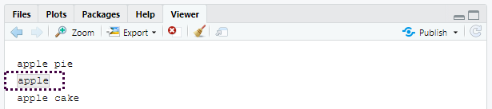
단어 사이의 경계(boundary)를 매칭시키려면 \b 를 사용하면 된다. 나는 R에서 이 방법을 자주 사용하지는 않지만 RStudio에서 다른 함수의 구성요소인 함수의 이름을 찾고자 할 때 한 번씩 사용한다. 예를 들어 \bsum\b 를 사용하여 summarize, summary, rowsum 등이 매칭되는 것을 피할 수 있다.
10.3.2.1 연습문제
문자열
"$^$"을 어떻게 매칭하겠는가?stringr::words의 일반적인 단어의 말뭉치(corpus)에서 다음에 해당하는 단어들을 찾는 정규표현식을 구하라.- “y”로 시작.
- “x”로 끝남.
- 정확히 세 글자. (
str_length()를 사용하는 부정행위를 하지 말 것!) - 7개 이상의 글자.
이 리스트는 길기 때문에
str_view()의match인수를 이용하여 매칭되는 단어들만, 혹은 매칭되지 않는 단어들만 볼 수 있다.
10.3.3 문자 클래스와 대체구문
하나 이상의 문자를 매칭하는 특별한 패턴들이 많이 있다. 우린 이미 하나를 보았는데, 줄바꿈을 제외하고 임의의 문자를 매칭하는 . 이다. 이 밖에도 네 개의 유용한 도구가 있다.
\d는 임의의 숫자와 매치한다.\s는 임의의 여백 문자(whitespace, 예를 들어 공백, 탭, 줄바꿈)와 매치한다.[abc]는 a, b 또는 c와 매치한다.[^abc]는 a, b, 또는 c를 제외한 임의의 문자와 매치한다.
\d 나 \s 를 포함하는 정규표현식을 만들기 위해서는 해당 문자열에서 \ 을 이스케이프 해야 하므로 "\\d" 나 "\\s" 로 입력해야 한다는 것을 기억하라.
단일 문자를 포함하는 문자형 클래스는 정규표현식에서 메타문자 하나를 포함하고 싶을때 역슬래시 이스케이프의 대안이 될 수 있다. 많은 사람들에게 가독성이 좋아진다.
# Look for a literal character that normally has special meaning in a regex
str_view(c("abc", "a.c", "a*c", "a c"), "a[.]c")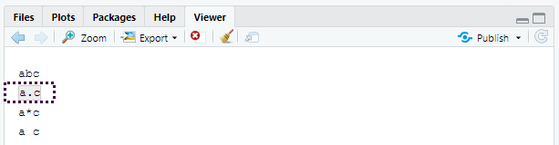
str_view(c("abc", "a.c", "a*c", "a c"), ".[*]c")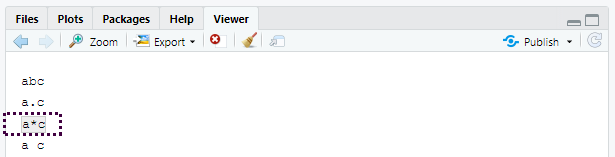
str_view(c("abc", "a.c", "a*c", "a c"), "a[ ]")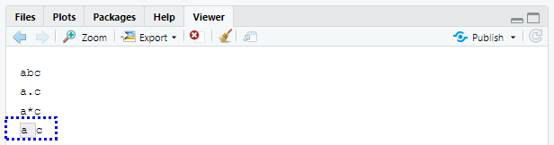
이 방법은 대부분 (전부는 아님) 정규표현식 메타문자에 적용된다: $ . | ? * + ( ) [ {. 안타깝게도 문자 클래스 내에서 조차 특수 의미가 있는 문자가 몇 있으며 백슬래시 이스케이프와 함께 해야 한다. ] \ ^ -.
대체구문을 이용하여 하나 이상의 대체 패턴 사이에서 선택하도록 할 수 있다. 예를 들어 abc|d..f 는 "abc" 또는 "deaf" 중 하나와 매치한다. | 는 우선순위가 높다. 따라서 abc|xyz 는 abc 혹은 xyz 와 매칭하라는 의미이지 abcyz 나 abxyz 와 매칭하라는 의미가 아니다. 수식 표현에서와 같이 연산 우선순위가 조금이라도 헷갈린다면 의도한 바를 분명히 하기 위해 괄호를 사용하라.
str_view(c("grey", "gray"), "gr(e|a)y")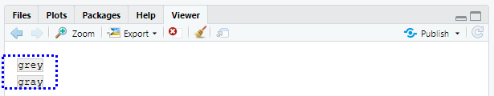
10.3.3.1 연습문제
- 다음에 해당하는 모든 단어를 찾는 정규표현식을 작성하라.
- 모음으로 시작함
- 자음만 포함함 (힌트: ‘비’-자음 매칭에 대해 생각해보라.)
ed로 끝나지만eed로 끝나지는 않음ing혹은ize로 끝남
- 다음의 규칙을 데이터기반으로 증명하라. ‘c 뒤를 제외하고는 i가 e 앞’ (영어 스펠링에서 ei와 ie가 헷갈릴 경우 이 두 글자 앞에 c 가 나온 경우를 제외하고는 ei가 맞다는 규칙)
- ‘q’ 다음은 항상 ‘u’ 인가?
- 미국 영어가 아닌 영국 영어로 쓰여진 단어를 매칭하는 정규표현식을 작성하라.
- 여러분의 나라에서 일반적으로 쓰이는 전화번호를 매칭하는 정규표현식을 작성하라.
10.3.4 반복
다음 단계는 패턴이 몇 회 매칭하는지를 조정하는 것이다.
?: 0 또는 1회+: 1회 이상*: 0회 이상
x <- "1888 is the longest year in Roman numerals: MDCCCLXXXVIII"
str_view(x, "CC?")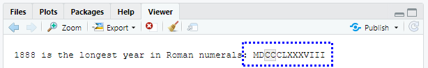
str_view(x, "CC+")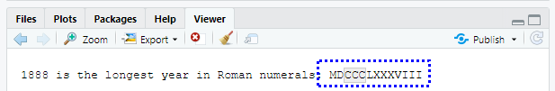
str_view(x, 'C[LX]+')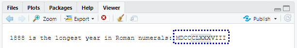
이 연산자의 우선순위는 낮음을 주목하라. 예를 들어 colou?r 를 사용하여 미국식이나 영국식 스펠링을 매치할 수 있다. 따라서 bana(na)+ 에서와 같이 대부분의 경우 괄호가 필요하다.
또한 매칭 횟수를 정확하게 지정할 수 있다.
{n}: 정확히 n회{n,}: n회 이상{,m}: 최대 m회{n,m}: n과 m회 사이
str_view(x, "C{2}")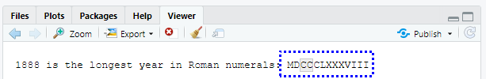
str_view(x, "C{2,}")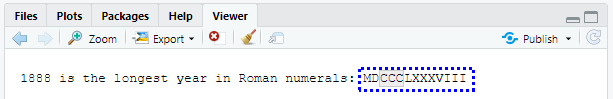
str_view(x, "C{2,3}")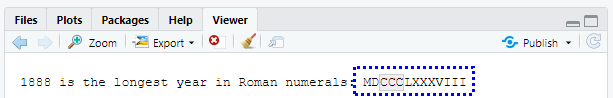
기본값으로 이러한 매칭은 ‘그리디(greedy)’ 매칭이다. 즉, 가능한 가장 긴 문자열과 매칭한다. 이를 ‘게으르게(lazy)’ 만들 수 있다. 뒤에 ? 를 넣으면 가장 짧은 문자열과 매칭된다. 정규표현식의 고급 기능이지만 이런 것도 있다는 것을 알아놓으면 유용하다.
str_view(x, 'C{2,3}?')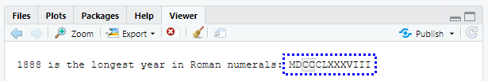
str_view(x, 'C[LX]+?')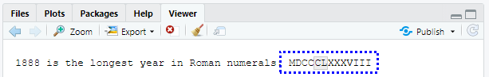
10.3.4.1 연습문제
?, +, *이 같음을{m,n}형식으로 설명하라.- 다음의 정규표현식이 어떤 것과 매칭하는지를 말로 설명하라. (사용하는 것이 정규표현식인지 아니면 그것을 정의하는 문자열인지 주의 깊게 읽고 확인하라.)
^.*$"\\{.+\\}"\d{4}-\d{2}-\d{2}"\\\\{4}"
- 다음의 모든 단어를 찾는 정규표현식을 작성하라.
- 세 개의 자음으로 시작.
- 세 개 이상의 모음이 연달아 있음.
- 두 개 이상의 모음-자음 쌍이 연달아 있음.
- 다음의 초보자 정규표현식 십자말풀이를 풀어보라. https://regexcrossword.com/challenges/beginner
10.3.5 그룹화와 역참조
앞서 괄호를 사용하여 복잡한 표현을 명확하게 하는 법을 배웠다. 괄호는 또한 (number 1, 2 등) 숫자달린 캡쳐 그룹을 생성한다. 캡쳐 그룹은 괄호 내에서 정규표현식의 일부와 매치되는 문자열 부분을 저장한다. \1, \2 등과 같이 역참조(backreference)로 캡쳐 그룹에 매칭된 텍스트를 참조할 수 있다. 예를 들어 다음의 정규표현식은 두 글자가 반복되는 과일 이름과 매칭한다.
fruit <- c("banana", "coconut", "cucumber", "jujube", "papaya", "salal berry")
str_view(fruit, "(..)\\1", match = TRUE)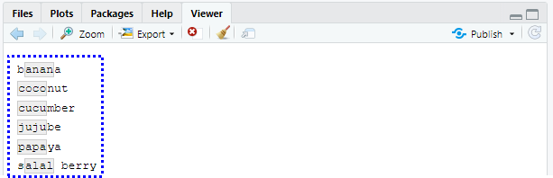
(str_match() 와 함께 쓰면 왜 유용한지 곧 알게 될 것이다.)
10.3.5.1 연습문제
- 다음의 표현식이 어떤 것과 매칭할지 말로 설명하라.
(.)\1\1"(.)(.)\\2\\1"(..)\1"(.).\\1.\\1""(.)(.)(.).*\\3\\2\\1"
- 다음의 단어와 매칭하는 정규표현식을 작성하라.
- 같은 문자로 시작하고 끝남.
- 두 문자 반복이 있음(예를 들어 ’church’는 ’ch’를 두 번 반복).
- 적어도 세 곳에서 반복되는 문자가 있음(예컨대, ’eleven’은 ’e’가 세 개).
10.4 패턴 매칭
이제 정규표현식의 기초를 배웠으므로 실제 문제에 적용하는 법에 대해 알아보자. 이 절에서는 다음을 수행하는 다양한 stringr 함수들을 배울 것이다.
- 어떤 문자열이 패턴과 매칭하는지 결정.
- 매칭의 위치를 찾기.
- 매칭의 내용을 추출.
- 매칭된 것을 새 값으로 교체.
- 매칭를 기반으로 문자열 분할.
계속 진행하기 전에 주의할 점은, 정규표현식은 너무 강력해서 모든 문제를 정규표현식 하나로 접근하려고 하기 쉽다는 것이다. 제이미 자윈스키(Jamie Zawinski)의 말을 들어보자.
문제에 직면했을 때 어떤 사람들은 ’풀 수 있어. 정규표현식을 사용하면 돼’라고 생각한다. 이제 그들에겐 풀어야 할 문제가 두 개이다.
조심하라는 뜻으로 이메일 주소가 유효한지를 검사하는 다음의 정규표현식을 살펴보라.
(?:(?:\r\n)?[ \t])*(?:(?:(?:[^()<>@,;:\\".\[\] \000-\031]+(?:(?:(?:\r\n)?[ \t]
)+|\Z|(?=[\["()<>@,;:\\".\[\]]))|"(?:[^\"\r\\]|\\.|(?:(?:\r\n)?[ \t]))*"(?:(?:
\r\n)?[ \t])*)(?:\.(?:(?:\r\n)?[ \t])*(?:[^()<>@,;:\\".\[\] \000-\031]+(?:(?:(
?:\r\n)?[ \t])+|\Z|(?=[\["()<>@,;:\\".\[\]]))|"(?:[^\"\r\\]|\\.|(?:(?:\r\n)?[
\t]))*"(?:(?:\r\n)?[ \t])*))*@(?:(?:\r\n)?[ \t])*(?:[^()<>@,;:\\".\[\] \000-\0
31]+(?:(?:(?:\r\n)?[ \t])+|\Z|(?=[\["()<>@,;:\\".\[\]]))|\[([^\[\]\r\\]|\\.)*\
](?:(?:\r\n)?[ \t])*)(?:\.(?:(?:\r\n)?[ \t])*(?:[^()<>@,;:\\".\[\] \000-\031]+
(?:(?:(?:\r\n)?[ \t])+|\Z|(?=[\["()<>@,;:\\".\[\]]))|\[([^\[\]\r\\]|\\.)*\](?:
(?:\r\n)?[ \t])*))*|(?:[^()<>@,;:\\".\[\] \000-\031]+(?:(?:(?:\r\n)?[ \t])+|\Z
|(?=[\["()<>@,;:\\".\[\]]))|"(?:[^\"\r\\]|\\.|(?:(?:\r\n)?[ \t]))*"(?:(?:\r\n)
?[ \t])*)*\<(?:(?:\r\n)?[ \t])*(?:@(?:[^()<>@,;:\\".\[\] \000-\031]+(?:(?:(?:\
r\n)?[ \t])+|\Z|(?=[\["()<>@,;:\\".\[\]]))|\[([^\[\]\r\\]|\\.)*\](?:(?:\r\n)?[
\t])*)(?:\.(?:(?:\r\n)?[ \t])*(?:[^()<>@,;:\\".\[\] \000-\031]+(?:(?:(?:\r\n)
?[ \t])+|\Z|(?=[\["()<>@,;:\\".\[\]]))|\[([^\[\]\r\\]|\\.)*\](?:(?:\r\n)?[ \t]
)*))*(?:,@(?:(?:\r\n)?[ \t])*(?:[^()<>@,;:\\".\[\] \000-\031]+(?:(?:(?:\r\n)?[
\t])+|\Z|(?=[\["()<>@,;:\\".\[\]]))|\[([^\[\]\r\\]|\\.)*\](?:(?:\r\n)?[ \t])*
)(?:\.(?:(?:\r\n)?[ \t])*(?:[^()<>@,;:\\".\[\] \000-\031]+(?:(?:(?:\r\n)?[ \t]
)+|\Z|(?=[\["()<>@,;:\\".\[\]]))|\[([^\[\]\r\\]|\\.)*\](?:(?:\r\n)?[ \t])*))*)
*:(?:(?:\r\n)?[ \t])*)?(?:[^()<>@,;:\\".\[\] \000-\031]+(?:(?:(?:\r\n)?[ \t])+
|\Z|(?=[\["()<>@,;:\\".\[\]]))|"(?:[^\"\r\\]|\\.|(?:(?:\r\n)?[ \t]))*"(?:(?:\r
\n)?[ \t])*)(?:\.(?:(?:\r\n)?[ \t])*(?:[^()<>@,;:\\".\[\] \000-\031]+(?:(?:(?:
\r\n)?[ \t])+|\Z|(?=[\["()<>@,;:\\".\[\]]))|"(?:[^\"\r\\]|\\.|(?:(?:\r\n)?[ \t
]))*"(?:(?:\r\n)?[ \t])*))*@(?:(?:\r\n)?[ \t])*(?:[^()<>@,;:\\".\[\] \000-\031
]+(?:(?:(?:\r\n)?[ \t])+|\Z|(?=[\["()<>@,;:\\".\[\]]))|\[([^\[\]\r\\]|\\.)*\](
?:(?:\r\n)?[ \t])*)(?:\.(?:(?:\r\n)?[ \t])*(?:[^()<>@,;:\\".\[\] \000-\031]+(?
:(?:(?:\r\n)?[ \t])+|\Z|(?=[\["()<>@,;:\\".\[\]]))|\[([^\[\]\r\\]|\\.)*\](?:(?
:\r\n)?[ \t])*))*\>(?:(?:\r\n)?[ \t])*)|(?:[^()<>@,;:\\".\[\] \000-\031]+(?:(?
:(?:\r\n)?[ \t])+|\Z|(?=[\["()<>@,;:\\".\[\]]))|"(?:[^\"\r\\]|\\.|(?:(?:\r\n)?
[ \t]))*"(?:(?:\r\n)?[ \t])*)*:(?:(?:\r\n)?[ \t])*(?:(?:(?:[^()<>@,;:\\".\[\]
\000-\031]+(?:(?:(?:\r\n)?[ \t])+|\Z|(?=[\["()<>@,;:\\".\[\]]))|"(?:[^\"\r\\]|
\\.|(?:(?:\r\n)?[ \t]))*"(?:(?:\r\n)?[ \t])*)(?:\.(?:(?:\r\n)?[ \t])*(?:[^()<>
@,;:\\".\[\] \000-\031]+(?:(?:(?:\r\n)?[ \t])+|\Z|(?=[\["()<>@,;:\\".\[\]]))|"
(?:[^\"\r\\]|\\.|(?:(?:\r\n)?[ \t]))*"(?:(?:\r\n)?[ \t])*))*@(?:(?:\r\n)?[ \t]
)*(?:[^()<>@,;:\\".\[\] \000-\031]+(?:(?:(?:\r\n)?[ \t])+|\Z|(?=[\["()<>@,;:\\
".\[\]]))|\[([^\[\]\r\\]|\\.)*\](?:(?:\r\n)?[ \t])*)(?:\.(?:(?:\r\n)?[ \t])*(?
:[^()<>@,;:\\".\[\] \000-\031]+(?:(?:(?:\r\n)?[ \t])+|\Z|(?=[\["()<>@,;:\\".\[
\]]))|\[([^\[\]\r\\]|\\.)*\](?:(?:\r\n)?[ \t])*))*|(?:[^()<>@,;:\\".\[\] \000-
\031]+(?:(?:(?:\r\n)?[ \t])+|\Z|(?=[\["()<>@,;:\\".\[\]]))|"(?:[^\"\r\\]|\\.|(
?:(?:\r\n)?[ \t]))*"(?:(?:\r\n)?[ \t])*)*\<(?:(?:\r\n)?[ \t])*(?:@(?:[^()<>@,;
:\\".\[\] \000-\031]+(?:(?:(?:\r\n)?[ \t])+|\Z|(?=[\["()<>@,;:\\".\[\]]))|\[([
^\[\]\r\\]|\\.)*\](?:(?:\r\n)?[ \t])*)(?:\.(?:(?:\r\n)?[ \t])*(?:[^()<>@,;:\\"
.\[\] \000-\031]+(?:(?:(?:\r\n)?[ \t])+|\Z|(?=[\["()<>@,;:\\".\[\]]))|\[([^\[\
]\r\\]|\\.)*\](?:(?:\r\n)?[ \t])*))*(?:,@(?:(?:\r\n)?[ \t])*(?:[^()<>@,;:\\".\
[\] \000-\031]+(?:(?:(?:\r\n)?[ \t])+|\Z|(?=[\["()<>@,;:\\".\[\]]))|\[([^\[\]\
r\\]|\\.)*\](?:(?:\r\n)?[ \t])*)(?:\.(?:(?:\r\n)?[ \t])*(?:[^()<>@,;:\\".\[\]
\000-\031]+(?:(?:(?:\r\n)?[ \t])+|\Z|(?=[\["()<>@,;:\\".\[\]]))|\[([^\[\]\r\\]
|\\.)*\](?:(?:\r\n)?[ \t])*))*)*:(?:(?:\r\n)?[ \t])*)?(?:[^()<>@,;:\\".\[\] \0
00-\031]+(?:(?:(?:\r\n)?[ \t])+|\Z|(?=[\["()<>@,;:\\".\[\]]))|"(?:[^\"\r\\]|\\
.|(?:(?:\r\n)?[ \t]))*"(?:(?:\r\n)?[ \t])*)(?:\.(?:(?:\r\n)?[ \t])*(?:[^()<>@,
;:\\".\[\] \000-\031]+(?:(?:(?:\r\n)?[ \t])+|\Z|(?=[\["()<>@,;:\\".\[\]]))|"(?
:[^\"\r\\]|\\.|(?:(?:\r\n)?[ \t]))*"(?:(?:\r\n)?[ \t])*))*@(?:(?:\r\n)?[ \t])*
(?:[^()<>@,;:\\".\[\] \000-\031]+(?:(?:(?:\r\n)?[ \t])+|\Z|(?=[\["()<>@,;:\\".
\[\]]))|\[([^\[\]\r\\]|\\.)*\](?:(?:\r\n)?[ \t])*)(?:\.(?:(?:\r\n)?[ \t])*(?:[
^()<>@,;:\\".\[\] \000-\031]+(?:(?:(?:\r\n)?[ \t])+|\Z|(?=[\["()<>@,;:\\".\[\]
]))|\[([^\[\]\r\\]|\\.)*\](?:(?:\r\n)?[ \t])*))*\>(?:(?:\r\n)?[ \t])*)(?:,\s*(
?:(?:[^()<>@,;:\\".\[\] \000-\031]+(?:(?:(?:\r\n)?[ \t])+|\Z|(?=[\["()<>@,;:\\
".\[\]]))|"(?:[^\"\r\\]|\\.|(?:(?:\r\n)?[ \t]))*"(?:(?:\r\n)?[ \t])*)(?:\.(?:(
?:\r\n)?[ \t])*(?:[^()<>@,;:\\".\[\] \000-\031]+(?:(?:(?:\r\n)?[ \t])+|\Z|(?=[
\["()<>@,;:\\".\[\]]))|"(?:[^\"\r\\]|\\.|(?:(?:\r\n)?[ \t]))*"(?:(?:\r\n)?[ \t
])*))*@(?:(?:\r\n)?[ \t])*(?:[^()<>@,;:\\".\[\] \000-\031]+(?:(?:(?:\r\n)?[ \t
])+|\Z|(?=[\["()<>@,;:\\".\[\]]))|\[([^\[\]\r\\]|\\.)*\](?:(?:\r\n)?[ \t])*)(?
:\.(?:(?:\r\n)?[ \t])*(?:[^()<>@,;:\\".\[\] \000-\031]+(?:(?:(?:\r\n)?[ \t])+|
\Z|(?=[\["()<>@,;:\\".\[\]]))|\[([^\[\]\r\\]|\\.)*\](?:(?:\r\n)?[ \t])*))*|(?:
[^()<>@,;:\\".\[\] \000-\031]+(?:(?:(?:\r\n)?[ \t])+|\Z|(?=[\["()<>@,;:\\".\[\
]]))|"(?:[^\"\r\\]|\\.|(?:(?:\r\n)?[ \t]))*"(?:(?:\r\n)?[ \t])*)*\<(?:(?:\r\n)
?[ \t])*(?:@(?:[^()<>@,;:\\".\[\] \000-\031]+(?:(?:(?:\r\n)?[ \t])+|\Z|(?=[\["
()<>@,;:\\".\[\]]))|\[([^\[\]\r\\]|\\.)*\](?:(?:\r\n)?[ \t])*)(?:\.(?:(?:\r\n)
?[ \t])*(?:[^()<>@,;:\\".\[\] \000-\031]+(?:(?:(?:\r\n)?[ \t])+|\Z|(?=[\["()<>
@,;:\\".\[\]]))|\[([^\[\]\r\\]|\\.)*\](?:(?:\r\n)?[ \t])*))*(?:,@(?:(?:\r\n)?[
\t])*(?:[^()<>@,;:\\".\[\] \000-\031]+(?:(?:(?:\r\n)?[ \t])+|\Z|(?=[\["()<>@,
;:\\".\[\]]))|\[([^\[\]\r\\]|\\.)*\](?:(?:\r\n)?[ \t])*)(?:\.(?:(?:\r\n)?[ \t]
)*(?:[^()<>@,;:\\".\[\] \000-\031]+(?:(?:(?:\r\n)?[ \t])+|\Z|(?=[\["()<>@,;:\\
".\[\]]))|\[([^\[\]\r\\]|\\.)*\](?:(?:\r\n)?[ \t])*))*)*:(?:(?:\r\n)?[ \t])*)?
(?:[^()<>@,;:\\".\[\] \000-\031]+(?:(?:(?:\r\n)?[ \t])+|\Z|(?=[\["()<>@,;:\\".
\[\]]))|"(?:[^\"\r\\]|\\.|(?:(?:\r\n)?[ \t]))*"(?:(?:\r\n)?[ \t])*)(?:\.(?:(?:
\r\n)?[ \t])*(?:[^()<>@,;:\\".\[\] \000-\031]+(?:(?:(?:\r\n)?[ \t])+|\Z|(?=[\[
"()<>@,;:\\".\[\]]))|"(?:[^\"\r\\]|\\.|(?:(?:\r\n)?[ \t]))*"(?:(?:\r\n)?[ \t])
*))*@(?:(?:\r\n)?[ \t])*(?:[^()<>@,;:\\".\[\] \000-\031]+(?:(?:(?:\r\n)?[ \t])
+|\Z|(?=[\["()<>@,;:\\".\[\]]))|\[([^\[\]\r\\]|\\.)*\](?:(?:\r\n)?[ \t])*)(?:\
.(?:(?:\r\n)?[ \t])*(?:[^()<>@,;:\\".\[\] \000-\031]+(?:(?:(?:\r\n)?[ \t])+|\Z
|(?=[\["()<>@,;:\\".\[\]]))|\[([^\[\]\r\\]|\\.)*\](?:(?:\r\n)?[ \t])*))*\>(?:(
?:\r\n)?[ \t])*))*)?;\s*)이는 (이메일 주소는 놀랍게도 실제로는 단순하지 않기 때문에) 다소 극단적인 예이지만, 실제 코드에서 사용된다. 자세한 내용은 스택오버플로 토론 을 참조하라.
우리는 프로그래밍 언어를 사용하고 있으며, 활용할 수 있는 다른 도구들이 있다는 것을 잊지 않아야 한다. 하나의 복잡한 정규표현식을 작성하는 것보다, 간단한 정규표현식을 여러 개 작성하는 것이 쉬운 경우가 많다. 문제를 해결해줄 단일 정규표현식이 떠오르지 않는다면, 잠시 뒤로 물러서서, 문제를 작은 조각들로 분해하여, 작은 문제들을 하나씩 해결하면서 다음 단계로 나아갈 수 있는지 생각해보라.
10.4.1 매칭 탐지
문자형 벡터가 패턴과 매칭하는지 확인하려면, str_detect() 를 사용하라. 이 함수는 입력과 같은 길이의 논리형 벡터를 반환한다.
x <- c("apple", "banana", "pear")
str_detect(x, "e")## [1] TRUE FALSE TRUE논리형 벡터를 수치형 맥락에서 사용할 경우, FALSE 는 0 이 되고, TRUE 는 1 이 된다는 것을 명심하라. 따라서 긴 벡터에서의 매치 결과가 궁금할 때는, sum() 과 mean() 을 유용하게 사용할 수 있다.
# How many common words start with t?
sum(str_detect(words, "^t"))## [1] 65# What proportion of common words end with a vowel?
mean(str_detect(words, "[aeiou]$"))## [1] 0.2765306복잡한 논리적 조건문이 있을 때(예를 들어 d 가 아니라면, c가 아닌 a나 b를 매치), 하나의 정규표현식을 작성하는 것보다, 여러 str_detect() 호출을 논리 연산자와 함께 묶는 것이 쉬울 때가 많다. 예를 들어 모음을 포함하지 않는 모든 단어를 찾는 두 가지 방법이 있다.
# Find all words containing at least one vowel, and negate
no_vowels_1 <- !str_detect(words, "[aeiou]")
# Find all words consisting only of consonants (non-vowels)
no_vowels_2 <- str_detect(words, "^[^aeiou]+$")
identical(no_vowels_1, no_vowels_2)## [1] TRUE결과는 같지만, 나는 첫 번째 방법이 이해하기가 훨씬 쉽다고 생각한다. 정규표현식이 지나치게 복잡해질 경우, 작은 조각들로 분해하여, 각 조각에 이름을 주고, 논리적 연산으로 결합해보자. str_detect() 는 일반적으로 패턴과 매칭하는 요소를 선택하는 데 사용한다. 논리형 서브셋하기, 또는 편리한 str_subset() 래퍼로 이 작업을 수행할 수 있다.
words[str_detect(words, "x$")]## [1] "box" "sex" "six" "tax"str_subset(words, "x$")## [1] "box" "sex" "six" "tax"그러나 가지고 있는 문자열은 일반적으로 데이터프레임의 열일 것이므로, 대신 filter 를 사용하는 것이 좋다.
df <- tibble(
word = words,
i = seq_along(word)
)
df %>%
filter(str_detect(word, "x$"))## # A tibble: 4 x 2
## word i
## <chr> <int>
## 1 box 108
## 2 sex 747
## 3 six 772
## 4 tax 841str_detect() 의 변형은 str_count() 이다. 단순히 yes 또는 no 대신, 하나의 문자열에서 몇 번 매칭되는지를 알려준다.
x <- c("apple", "banana", "pear")
str_count(x, "a")## [1] 1 3 1# On average, how many vowels per word?
mean(str_count(words, "[aeiou]"))## [1] 1.991837str_count() 는 mutate() 와 함께 쓰는 것이 자연스럽다.
df %>%
mutate(
vowels = str_count(word, "[aeiou]"),
consonants = str_count(word, "[^aeiou]")
)## # A tibble: 980 x 4
## word i vowels consonants
## <chr> <int> <int> <int>
## 1 a 1 1 0
## 2 able 2 2 2
## 3 about 3 3 2
## # ... with 977 more rows매칭들끼리 서로 겹치지 않는다는 것을 주의하라. 예를 들어 "abababa" 에서 "aba" 패턴이 몇 번 매칭하는가? 정규표현식에선 세 번이 아닌 두 번이라고 답한다.
str_count("abababa", "aba")## [1] 2str_view_all("abababa", "aba")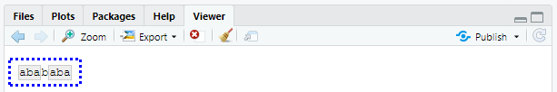
str_view_all() 의 용법에 주의하라. 곧 배우겠지만 많은 stringr 함수는 짝으로 제공된다. 즉, 단일 매칭에 동작하는 함수와, 모든 매칭에 동작하는 함수가 있다. 후자는 접미사 _all 이 붙는다.
10.4.1.1 연습문제
- 다음 문제들을 두 가지 방식으로 각각 풀어보라. 하나의 정규표현식을 사용해보고 또, 여러
str_detect()호출을 결합해보라.- x 로 시작 하거나 끝나는 모든 단어를 찾아라.
- 모음으로 시작하고 자음으로 끝나는 모든 단어를 찾아라.
- 각기 다른 모음을 하나 이상씩 포함하는 단어가 있는가?
- 어떤 단어가 가장 많은 모음을 갖는가? 어떤 단어가 모음의 비율이 가장 높은가? (힌트: 분모는 무엇인가?)
10.4.2 매칭 추출
매칭한 실제 텍스트를 추출하려면 str_extract() 를 사용하라. 이를 보기 위해 좀 더 복잡한 예제가 필요하다. 하버드 문장데이터(http://bit.ly/Harvardsentences )를 보려고 하는데, 이는 VOIP 시스템을 테스트하도록 설계되었지만, 정규표현식을 연습하는 데에도 유용하다. 이들은 stringr::sentences 에서 제공된다.
length(sentences)## [1] 720head(sentences)## [1] "The birch canoe slid on the smooth planks."
## [2] "Glue the sheet to the dark blue background."
## [3] "It's easy to tell the depth of a well."
## [4] "These days a chicken leg is a rare dish."
## [5] "Rice is often served in round bowls."
## [6] "The juice of lemons makes fine punch."색상을 포함하는 모든 문장을 찾고 싶다고 가정해보자. 먼저 색상 이름 벡터를 생성한 다음, 이를 하나의 정규표현식으로 변환한다.
colours <- c("red", "orange", "yellow", "green", "blue", "purple")
colour_match <- str_c(colours, collapse = "|")
colour_match## [1] "red|orange|yellow|green|blue|purple"이제 색상을 포함하는 문장을 선택할 수 있고, 그런 다음 매칭된 색상이 무엇인지 추출할 수 있다.
has_colour <- str_subset(sentences, colour_match)
matches <- str_extract(has_colour, colour_match)
head(matches)## [1] "blue" "blue" "red" "red" "red" "blue"str_extract() 는 첫 번째 매칭만 추출한다는 것을 주의하라. 매칭이 두 개 이상인 모든 문장을 우선 선택해보면 이를 가장 쉽게 볼 수 있다.
more <- sentences[str_count(sentences, colour_match) > 1]
str_view_all(more, colour_match)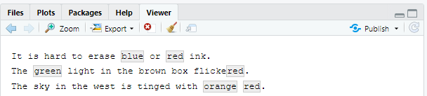
str_extract(more, colour_match)## [1] "blue" "green" "orange"이는 stringr 함수의 일반적인 패턴이다. 매칭 하나로 작업하면 훨씬 단순한 데이터 구조를 사용할 수 있기 때문이다. 매칭 모두를 얻으려면 str_extract_all() 를 사용하면 된다. 이는 리스트를 반환한다.
str_extract_all(more, colour_match)## [[1]]
## [1] "blue" "red"
##
## [[2]]
## [1] "green" "red"
##
## [[3]]
## [1] "orange" "red"리스트 와 반복 에서 리스트에 관해 자세한 내용을 배울 것이다.
str_extract_all() 에서 simplify = TRUE 를 하면 짧은 매칭이 가장 긴 것과 같은 길이로 확장된 행렬을 반환한다.
str_extract_all(more, colour_match, simplify = TRUE)## [,1] [,2]
## [1,] "blue" "red"
## [2,] "green" "red"
## [3,] "orange" "red"x <- c("a", "a b", "a b c")
str_extract_all(x, "[a-z]", simplify = TRUE)## [,1] [,2] [,3]
## [1,] "a" "" ""
## [2,] "a" "b" ""
## [3,] "a" "b" "c"10.4.2.1 연습문제
- 앞의 예에서 매칭된 정규표현식이 색상이 아닌 ’flickered’에 매칭한 것을 눈치챘을지 모르겠다. 이 문제를 해결하기 위해 정규식을 수정하라.
- 하버드 문장 데이터에서 다음을 추출하라.
- 각 문장의 첫 번째 단어.
ing로 끝나는 모든 단어.- 모든 복수형.
10.4.3 그룹화 매칭
이 장 앞부분에서 연산 우선순위를 명확히 할 목적과 역참조 목적으로 괄호 사용에 대해 이야기했었다. 이 외에도 복잡한 매치의 일부를 추출하기 위해서도 괄호를 사용할 수 있다. 예를 들어 문장에서 명사를 추출하고 싶다고 가정하자. 휴리스틱 방법으로 ‘a’ 또는 ‘the’ 다음에 오는 단어를 찾아 볼 것이다. 정규표현식에서 ’단어’를 정의하는 것은 약간 까다롭기 때문에, 여기서 다음의 간단한 근사법을 이용한다. 적어도 하나 이상의 문자(공백 제외) 시퀀스.
noun <- "(a|the) ([^ ]+)"
has_noun <- sentences %>%
str_subset(noun) %>%
head(10)
has_noun %>%
str_extract(noun)## [1] "the smooth" "the sheet" "the depth" "a chicken" "the parked"
## [6] "the sun" "the huge" "the ball" "the woman" "a helps"str_extract() 는 완전한 매치를 제공하는 반면, str_match() 는 각각 개별 요소를 제공한다. str_match() 는 문자형 벡터 대신 행렬을 반환하는데, 이 행렬에는 완전한 매치가 하나의 열로, 그 다음으로 각 그룹마다 열이 하나씩 따른다.
has_noun %>%
str_match(noun)## [,1] [,2] [,3]
## [1,] "the smooth" "the" "smooth"
## [2,] "the sheet" "the" "sheet"
## [3,] "the depth" "the" "depth"
## [4,] "a chicken" "a" "chicken"
## [5,] "the parked" "the" "parked"
## [6,] "the sun" "the" "sun"
## [7,] "the huge" "the" "huge"
## [8,] "the ball" "the" "ball"
## [9,] "the woman" "the" "woman"
## [10,] "a helps" "a" "helps"(예상했지만, 명사 검출하는 이 휴리스틱 방법은 좋지 않다. smooth나 parked 같은 형용사도 검출하고 있다.)
데이터가 티블인 경우, tidyr::extract() 를 사용하는 것이 더 쉽다. 이 함수는 str_match() 처럼 동작하지만, 매치를 명명할 것을 사용자에게 요청하고, 그 후 새로운 열로 배치한다.
tibble(sentence = sentences) %>%
tidyr::extract(
sentence, c("article", "noun"), "(a|the) ([^ ]+)",
remove = FALSE
)## # A tibble: 720 x 3
## sentence article noun
## <chr> <chr> <chr>
## 1 The birch canoe slid on the smooth planks. the smooth
## 2 Glue the sheet to the dark blue background. the sheet
## 3 It's easy to tell the depth of a well. the depth
## # ... with 717 more rowsstr_extract() 처럼, 각 문자열의 모든 매치를 원한다면 str_match_all() 이 필요하다.
10.4.3.1 연습문제
- ‘one,’ ‘two,’ ‘three’ 등과 같은 ‘숫자’ 다음에 오는 모든 단어를 구하라. 숫자와 단어 모두를 추출하라.
- 줄임말을 모두 찾아라. 아포스트로피 이전과 이후 조각을 분리하라.
10.4.4 매칭 치환
str_replace() 와 str_replace_all() 을 이용하여 매치를 새로운 문자열로 치환할 수 있다. 가장 간단한 용법은 패턴을 고정된 문자열로 치환하는 것이다.
x <- c("apple", "pear", "banana")
str_replace(x, "[aeiou]", "-")## [1] "-pple" "p-ar" "b-nana"str_replace_all(x, "[aeiou]", "-")## [1] "-ppl-" "p--r" "b-n-n-"str_replace_all() 을 사용하면 명명된 벡터를 제공하여 다중 치환을 수행할 수 있다.
x <- c("1 house", "2 cars", "3 people")
str_replace_all(x, c("1" = "one", "2" = "two", "3" = "three"))## [1] "one house" "two cars" "three people"고정된 문자열로 치환하는 대신, 매치의 구성요소를 삽입하기 위해 역참조를 사용할 수 있다. 다음 코드는 두 번째와 세 번째 단어의 순서를 바꾼다.
sentences %>%
str_replace("([^ ]+) ([^ ]+) ([^ ]+)", "\\1 \\3 \\2") %>%
head(5)## [1] "The canoe birch slid on the smooth planks."
## [2] "Glue sheet the to the dark blue background."
## [3] "It's to easy tell the depth of a well."
## [4] "These a days chicken leg is a rare dish."
## [5] "Rice often is served in round bowls."10.4.4.1 연습문제
- 문자열의 모든 슬래시를 역슬래시로 치환하라.
replace_all()을 사용하여str_to_lower()의 간단한 버전을 구현하라.- 단어의 첫 번째와 마지막 문자를 바꿔라. 여전히 단어가 되는 문자열은 무엇인가?
10.4.5 문자열 분할
문자열을 조각으로 분할하려면 str_split() 을 사용하면 된다. 예를 들어 문장을 단어로 분할할 수 있다.
sentences %>%
head(5) %>%
str_split(" ")## [[1]]
## [1] "The" "birch" "canoe" "slid" "on" "the" "smooth"
## [8] "planks."
##
## [[2]]
## [1] "Glue" "the" "sheet" "to" "the"
## [6] "dark" "blue" "background."
##
## [[3]]
## [1] "It's" "easy" "to" "tell" "the" "depth" "of" "a" "well."
##
## [[4]]
## [1] "These" "days" "a" "chicken" "leg" "is" "a"
## [8] "rare" "dish."
##
## [[5]]
## [1] "Rice" "is" "often" "served" "in" "round" "bowls."각 구성요소가 포함하는 조각의 개수가 다를 수 있으므로, 이 함수는 리스트를 반환한다. 길이가 1인 벡터로 작업하는 경우, 가장 쉬운 것은 리스트의 첫 번째 요소를 추출하는 것이다.
"a|b|c|d" %>%
str_split("\\|") %>%
.[[1]]## [1] "a" "b" "c" "d"한편, 리스트를 반환하는 다른 stringr 함수처럼 simplify = TRUE 를 사용하여 행렬을 반환할 수도 있다.
sentences %>%
head(5) %>%
str_split(" ", simplify = TRUE)## [,1] [,2] [,3] [,4] [,5] [,6] [,7] [,8]
## [1,] "The" "birch" "canoe" "slid" "on" "the" "smooth" "planks."
## [2,] "Glue" "the" "sheet" "to" "the" "dark" "blue" "background."
## [3,] "It's" "easy" "to" "tell" "the" "depth" "of" "a"
## [4,] "These" "days" "a" "chicken" "leg" "is" "a" "rare"
## [5,] "Rice" "is" "often" "served" "in" "round" "bowls." ""
## [,9]
## [1,] ""
## [2,] ""
## [3,] "well."
## [4,] "dish."
## [5,] ""#> [,1] [,2] [,3] [,4] [,5] [,6] [,7]
#> [1,] "The" "birch" "canoe" "slid" "on" "the" "smooth"
#> [2,] "Glue" "the" "sheet" "to" "the" "dark" "blue"
#> [3,] "It's" "easy" "to" "tell" "the" "depth" "of"
#> [4,] "These" "days" "a" "chicken" "leg" "is" "a"
#> [5,] "Rice" "is" "often" "served" "in" "round" "bowls."
#> [,8] [,9]
#> [1,] "planks." ""
#> [2,] "background." ""
#> [3,] "a" "well."
#> [4,] "rare" "dish."
#> [5,] "" ""조각을 최대 개수만큼 요청할 수도 있다.
fields <- c("Name: Hadley", "Country: NZ", "Age: 35")
fields %>% str_split(": ", n = 2, simplify = TRUE)## [,1] [,2]
## [1,] "Name" "Hadley"
## [2,] "Country" "NZ"
## [3,] "Age" "35"#> [,1] [,2]
#> [1,] "Name" "Hadley"
#> [2,] "Country" "NZ"
#> [3,] "Age" "35"또한, 패턴으로 문자열을 분할하는 대신 문자, 줄, 문장 및 단어 경계 (boundary() )로 분할할 수도 있다.
x <- "This is a sentence. This is another sentence."
str_view_all(x, boundary("word"))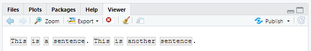
str_split(x, " ")[[1]]## [1] "This" "is" "a" "sentence." "" "This"
## [7] "is" "another" "sentence."#> [1] "This" "is" "a" "sentence." "" "This"
#> [7] "is" "another" "sentence."
str_split(x, boundary("word"))[[1]]## [1] "This" "is" "a" "sentence" "This" "is" "another"
## [8] "sentence"#> [1] "This" "is" "a" "sentence" "This" "is"
#> [7] "another" "sentence"10.4.5.1 연습문제
"apples, pears, and bananas"와 같은 문자열을 개별 구성요소로 분할하라.- 왜
" "보다boundary("word")로 분할하는 것이 좋은가? - 빈 문자열 (
"")로 분할하면 어떻게 되는가? 실험해 본 후, 설명서를 읽어라.
10.4.6 매치 찾기
str_locate() 와 str_locate_all() 을 사용하면 각 매치의 시작과 종료 위치를 알 수 있다. 이는 원하는 바를 완벽하게 수행하는 함수가 없을 때 특히 유용하다. str_locate() 를 사용하여 매칭 패턴을 찾을 수 있으며 str_sub() 를 사용하여, 매칭 패턴을 추출하거나 수정할 수 있다.
10.5 기타 패턴 유형
문자열로 된 패턴을 사용하면 자동으로 regex() 호출로 래핑된다.
fruit <- c("banana", "Banana", "BANANA")
# The regular call:
str_view(fruit, "nana")# Is shorthand for
str_view(fruit, regex("nana"))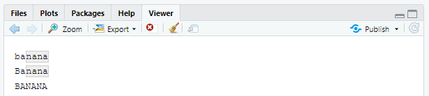
regex() 의 다른 인수를 사용하여 매치의 세부사항을 제어할 수 있다.
ignore_case = TRUE를 하면 문자가 대문자나 소문자 형태 모두로 매칭된다. 이때 항상 현재의 로케일을 사용한다.bananas <- c("banana", "Banana", "BANANA") str_view(bananas, "banana")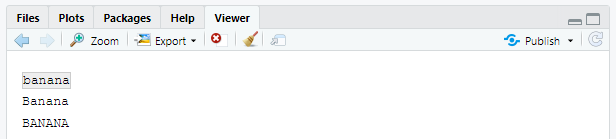
str_view(bananas, regex("banana", ignore_case = TRUE))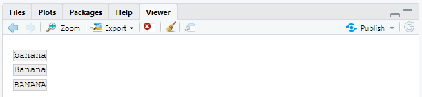
multiline = TRUE를 하면^와$이 전체 문자열의 시작, 끝이 아니라, 각 라인의 시작과 끝이 매칭된다.x <- "Line 1\nLine 2\nLine 3" str_extract_all(x, "^Line")[[1]]## [1] "Line"str_extract_all(x, regex("^Line", multiline = TRUE))[[1]]## [1] "Line" "Line" "Line"comments = TRUE를 하면 복잡한 정규표현식을 이해하기 쉽도록 설명과 공백을 사용할 수 있게 된다.#뒤에 나오는 다른 문자들처럼 공백도 무시된다. 공백 문자를 매치하기 위해서는“\\”로 이스케이프 해야 한다.phone <- regex(" \\(? # optional opening parens (\\d{3}) # area code [) -]? # optional closing parens, space, or dash (\\d{3}) # another three numbers [ -]? # optional space or dash (\\d{3}) # three more numbers ", comments = TRUE) str_match("514-791-8141", phone)## [,1] [,2] [,3] [,4] ## [1,] "514-791-814" "514" "791" "814"dotall = TRUE를 하면.이\n을 포함한 모든 것에 매칭된다.str_detect("\nX\n", ".X.")## [1] FALSEstr_detect("\nX\n", regex(".X.", dotall = TRUE))## [1] TRUE
regex() 대신 사용할 수 있는 세 가지 함수가 있다.
fixed()는 지정된 일련의 바이트와 정확히 매치한다. 이 함수는 모든 특수 정규표현식을 무시하고 매우 낮은 수준에서 동작한다. 이를 사용하여 복잡한 이스케이프를 피할 수 있으며 정규표현식보다 훨씬 속도가 빠르다. 다음의 소규모 벤치마크는 단순한 예시에 대해 약 3배 빠르다는 것을 보여준다.microbenchmark::microbenchmark( fixed = str_detect(sentences, fixed("the")), regex = str_detect(sentences, "the"), times = 20 )## Unit: microseconds ## expr min lq mean median uq max neval ## fixed 71.2 75.20 86.000 77.20 81.45 174.6 20 ## regex 202.6 205.05 215.855 206.95 217.35 273.0 20fixed()를 비영어에 사용할 때는 조심하라. 같은 문자를 나타내는 방법이 여러 가지이기 때문에 문제가 되는 경우가 많다. 예를 들어 ’á’를 정의하는 방법에는 두 가지가 있다. 즉, 단일한 문자로 하거나, ’a’와 악센트로 하는 방법이다.a1 <- "\u00e1" a2 <- "a\u0301" c(a1, a2)## [1] "a" "a<U+0301>"a1 == a2## [1] FALSE동일하게 렌더링하지만 다르게 정의되었기 때문에
fixed()가 매치를 찾지 못한다. 대신, 인간의 문자 비교 규칙을 존중하는coll()(아래에 정의됨)을 사용할 수 있다.str_detect(a1, fixed(a2))## [1] FALSEstr_detect(a1, coll(a2))## [1] TRUEcoll()은 표준 정렬(collation) 규칙을 사용하여 문자열을 비교한다. 대소문자를 구분하지 않는(case-insensitive) 매치를 수행할 때 유용하다.coll()은 문자 비교 규칙을 제어하는 로케일 파라미터를 취한다는 것을 주의해야 한다. 불행하게도 세계의 각 지역은 다른 규칙을 사용한다!# That means you also need to be aware of the difference # when doing case insensitive matches: i <- c("I", "İ", "i", "ı") i## [1] "I" "<U+0130>" "i" "ı"str_subset(i, coll("i", ignore_case = TRUE))## [1] "I" "i"str_subset(i, coll("i", ignore_case = TRUE, locale = "tr"))## [1] "i"fixed()와regex()모두에ignore_case인수가 있지만, 로케일 선택을 허용하지는 않는다. 이들은 항상 기본 로케일을 사용한다. 다음 코드를 통해 이를 알아볼 수 있다. (stringi 에서 더 살펴보자)stringi::stri_locale_info()## $Language ## [1] "ko" ## ## $Country ## [1] "KR" ## ## $Variant ## [1] "" ## ## $Name ## [1] "ko_KR"coll()의 단점은 속도이다. 어느 문자가 같은지 인식하는 규칙이 복잡하기 때문에,coll()은regex()와fixed()에 비해 상대적으로 느리다.str_split()에서 보았듯이boundary()를 사용하여 경계를 매치할 수 있다. 다른 함수들과도 사용할 수 있다.x <- "This is a sentence." str_view_all(x, boundary("word"))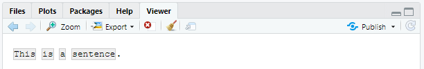
str_extract_all(x, boundary("word"))## [[1]] ## [1] "This" "is" "a" "sentence"
10.5.1 연습문제
regex()vsfixed()를 사용하여, 어떻게\를 포함하는 모든 문자열을 찾겠는가?sentences에서 가장 자주 나오는 단어 다섯 가지는 무엇인가?
10.6 정규 표현식의 기타 용도
베이스 R 의 다음의 두 함수도 정규표현식을 사용한다.
apropos()는 전역 환경에서 사용할 수 있는 모든 객체를 검색한다. 함수의 이름을 기억할 수 없는 경우에 유용하다.apropos("replace")## [1] "%+replace%" "replace" "replace.substring.wild" ## [4] "replace_na" "setReplaceMethod" "str_replace" ## [7] "str_replace_all" "str_replace_na" "theme_replace"#> [1] "%+replace%" "replace" "replace_na" #> [4] "setReplaceMethod" "str_replace" "str_replace_all" #> [7] "str_replace_na" "theme_replace"dir()은 디렉터리에 있는 모든 파일을 나열한다.pattern인자는 정규표현식을 취해, 매치하는 파일 이름만 반환한다. 예를 들어 현재 디렉터리에 있는 모든 R 파일(R 마크다운 파일의 경우의 패턴은"\\.Rmd$")을 다음과 같이 찾을 수 있다.head(dir(pattern = "\\.R$"))## character(0)(
*.Rmd같은 ’글로브(globs) 패턴’에 익숙한 경우,glob2rx()를 사용하여 이를 정규표현식으로 변환할 수 있다.)
10.7 stringi
stringr 은 stringi 패키지 기반으로 만들어졌다. stringr 은 학습할 때 유용한데, 왜냐하면 이 패키지는 자주 사용하는 문자열 조작 함수들을 다루기 위해 엄선된 최소한의 함수들만 보여주기 때문이다. 반면, stringi 는 전체를 포괄하도록 설계되었고, 필요한 거의 모든 함수를 포함한다. stringi 에는 234 개의 함수가 있지만, stringr 에는 46개가 있다.
stringr 에서 잘 안될 경우, stringi 에서 한 번 찾아보는 것이 좋다. 두 패키지는 매우 유사하게 동작하므로, stringr 에서 배운 것을 자연스럽게 활용할 수 있을 것이다. 주요 차이점은 접두사이다(str_ 과 stri_ ).
10.7.1 연습문제
- 다음을 수행하는 stringi 함수를 찾아라.
- 단어의 수를 계산.
- 중복 문자열을 찾음.
- 랜덤 텍스트를 생성.
stri_sort()에서 정렬에 사용할 언어를 어떻게 제어하겠는가?